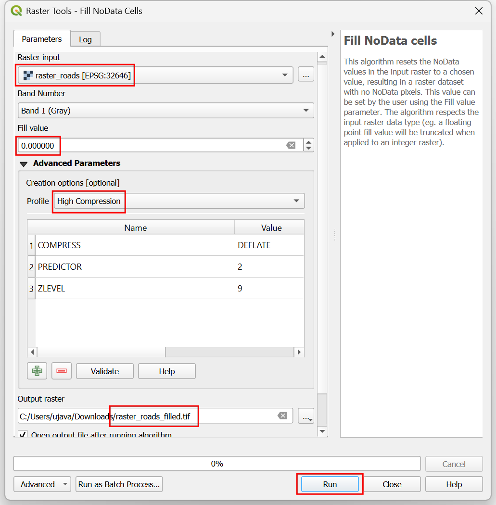
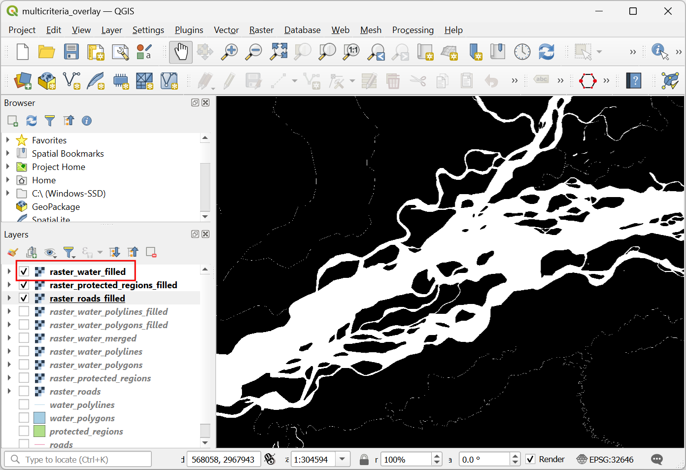

Ujaval Gandhi
Ujaval GandhiMulti Criteria Overlay Analyse (QGIS3)¶
Multi-criteria gewogen overlay-analyse is het proces van het toewijzen van gebieden op basis van een variëteit aan eigenschappen die de geselecteerde gebieden zouden moeten hebben. Hoewel dit een veel voorkomende bewerking in GIS is, wordt die het beste uitgevoerd in de rasterruimte met een op een raster gebaseerde benadering.
Notitie
Vector- vs Raster-overlays
U kunt de overlay-analyse uitvoeren op vectorlagen met gereedschappen voor geoverwerking, zoals buffer, dissolve, difference en intersection. Deze methode is ideaal als u een binair antwoord geschikt/niet-geschikt zoekt en u werkt met een handjevol lagen. U kunt onze videohandleiding bekijken op Locating A New Bicycle Parking Station using Multicriteria Overlay Analysis voor een stap-voor-stap gids voor deze benadering.
Werken in de rasterruimte geeft u een rangschikking van de geschiktheid - niet alleen de meest geschikte plek. Het stelt u ook in staat elke aantal invoerlagen gemakkelijk te combineren en verschillende wegingen toe te wijzen aan elk criterium. Over het algemeen is dit de voorkeursbenadering voor geschiktheid.
Deze handleiding gaat door de typische werkstroom voor het uitvoeren van een geschikte plaats-analyse - converteren van bron vectorgegevens naar toepasselijke rasters, ze opnieuw te classificeren en rekenkundige bewerkingen uitvoeren.
Overzicht van de taak¶
In deze handleiding zullen we de geschikte gebieden voor ontwikkeling identificeren, dat zijn
Dichtbij wegen en
Niet in de buurt van watergebieden en
Niet in een beschermde regio.

De gegevens ophalen¶
We zullen vector gegevenslagen gebruiken van OpenStreetMap (OSM). OSM is een globale database van vrij beschikbare basis kaartgegevens. Geofabrik verschaft dagelijks bijgewerkte Shapefiles voor gegevenssets van OpenStreetMap.
We zullen de gegevenslagen van OSM gebruiken voor de staat Assam in India. Geofabrik India shapefiles werden gedownload, opnieuw geprojecteerd naar een projectie UTM, geclipt tot de staatsgrenzen en verpakt in één enkel bestand voor GeoPackage. U kunt een kopie van het GeoPackage downloaden vanaf de link hieronder:
Gegevensbron: [GEOFABRIK]
Procedure¶
Blader naar het gedownloade bestand
assam.gpkgin QGIS Browser. Vergroot het en sleep elk van de 5 individuele gegevenslagen naar het kaartvenster. U zult de lagenboundary,roads,protected_regions,water_polygonsenwater_polylineszien geladen in het paneel Lagen.

De eerste stap in de overlay-analyse, is om elke gegevenslaag te converteren naar een raster. Een belangrijke overweging is dat alle rasters hetzelfde bereik moeten hebben. We zullen de laag
boundarygebruiken als het bereik voor alle rasters. Ga naar . Zoek naar en lokaliseer het algoritme . Dubbelklik er op om het te starten.

In het dialoogvenster Vector conversie - Rasteriseren (vector naar raster), selecteer
roadsals de Invoerlaag. We willen een uitvoerraster maken met een pixelwaarde van 1 waar een weg is en 0 waar geen wegen zijn. Voer1in als de Een vaste waarde om te branden. De invoerlagen zijn in een geprojecteerd CRS met meters als de eenheid. SelecteerEenheden voor geoverwijzingenals de Eenheden grootte uitvoerraster. We zullen de resolutie van het uitvoerraster instellen op 15 meters. Selecteer15voor zowel Breedte/Horizontale resolutie als Hoogte/Verticale resolutie. Klik vervolgens op de pijl naast Bereik uitvoer en selecteer voor .

Scroll naar beneden naar de Geavanceerde parameters en selecteer het profiel
Hoge compressieom de compressie toe te passen. Dit zal het gecomprimeerde rasterbestand kleiner maken na het uitvoeren van het gereedschap. Toepassen van compressie zonder verlies wordt enorm aanbevolen bij het werken met rastergegevens.

Stel het uitvoerraster Gerasteriseerd in als
raster_roads.tifen klik op Uitvoeren.

Once the processing finishes, you will see a new layer raster_roads loaded in the Layers panel. The raster has pixel values 1 for pixels which intersected with the roads. All other pixels are set as NoData values. These nodata values are problematic because when raster calculator (which we will use later) encounters a pixel with nodata value in any layer, it sets the output value of that pixel to nodata as well, resulting is unexpected output. We will fill these nodata values with the value 0. Search for and locate the algorithm. Double-click to launch it.

Selecteer
raster_roadsals de Raster input en kies0als de Vulwaarde. Scroll naar beneden naar de Geavanceerde parameters en selecteer het profielHoge compressieom de compressie toe te passen. Stel het uitvoerbestand in oproads_proximity.tifen klik op Uitvoeren.

Once the processing finishes, you will see the new layer
raster_roads_filledloaded in the Layers panel. This raster has values 1 for roads and 0 for no roads. If the layer is not visualized correctly, you can click the Open the Layer Styling Panel and set the Min to0and Max to1.

Repeat steps 3-8 for the other 3 vector layers
protected_regions,water_polylinesandwater_polygonslayers. You need to rasterize and fill the nodata cells for these layers. If you want to run these steps manually, you can configure the processing algorithm dialog, run the algorithm and once the algorithm finishes, switch to the Parameters tab and just change the input and output layer names. You can also run each algorithm on all 4 layers in a single step using Batch Processing. See the Massa verwerken met behulp van Framework Processing (QGIS 3) tutorial to learn more. Once you are done, you should have 4 raster layers and generate the corresponding raster layersraster_roads_filled,raster_protected_regions_filled,raster_water_polylines_filledandraster_water_polygons_filled. You will notice that we have 2 water related layers - both representing water. We can merge them to have a single layer representing water areas in the region. Search for and locate algorithm in the Processing Toolbox. Double-click to launch it.

Selecteer de lagen
raster_water_polygonsenraster_water_polylinesmet de knop … als Invoerlagen. Voer de volgende expressie in met de knop ε. Laat alle andere opties als standaard staan en sla de uitvoerlaag op met de naamraster_water_merged.tifen klik op Uitvoeren.
"raster_water_polygons_filled@1" + "raster_water_polylines_filled@1"
Het resulterende samengevoegde raster zal pixels hebben met de waarde 1 voor alle gebieden met water. Maar het zal u opvallen dat er sommige regio’s zijn waar zowel een waterpolygoon als een waterpolylijn was. Die gebieden zullen pixels hebben met de waarde 2 - wat niet juist is. We kunnen dit repareren met een eenvoudige expressie. Open het algoritme opnieuw.
Select
raster_water_mergedlayer using … button as an Input Layer. Enter the following expression using ε button. Keep all the other options as default and save the output layer with the nameraster_water_filled.tifand click Run.
"raster_water_merged@1" > 0
The resulting layer
raster_water_fillednow has pixels with only 0 and 1 values.

Nu we lagen hebben die pixels voor wegen en water weergeven, kunnen we rasters voor nabijheid maken. Deze zijn ook wel bekend als Euclidische afstanden - waar elke pixel in het uitvoerraster de afstand naar de dichtstbijzijnde pixel in de invoerlaag weergeeft. Dit resulterende raster kan dan worden gebruikt om geschikte gebieden te bepalen die binnen een bepaalde afstand vanaf de invoer liggen. Zoek naar en lokaliseer het algoritme . Dubbelklik er op om het te starten.

In the Raster Analysis - Proximity (Raster Distance) dialog, select
raster_roads_filledas the Input layer. ChooseGeoreferenced coordinatesas the Distance units. As the input layers are in a projected CRS with meters as the units, enter5000(5 kilometers) as the Maximum distance to be generated. For all pixels that are more than the maximum distance away - we will set their values to be 5000 as well. So set the Nodata value to use for the destination proximity raster value to5000.

U kunt de Geavanceerde parameters vergroten en het profiel
Hoge compressieselecteren om de compressie toe te passen. Noem het uitvoerbestandroads_proximity.tifen klik op Uitvoeren.

Notitie
It may take upto 15 minutes for this process to run. It is a computationally intensive algorithm that needs to compute distance for each pixel of the input raster.
Als de verwerking is voltooid zal een nieuwe laag
roads_proximityzijn toegevoegd aan het paneel Lagen. Laten we, om het beter te visualiseren, de standaard opmaak wijzigen. Klik op de knop Paneel Laag opmaken openen in het paneel Lagen. Wijzig de waarde Max onder Kleurovergang naar5000.

Repeat the Proximity (Raster Distance) algorithm for the
raster_water_filledlayer with same parameters and name the outputwater_proximity.tif. If you click around the resulting raster, you will see that it is a continuum of values from 0 to 5000. To use this raster in overlay analysis ,we must first re-classify it to create discrete values. Open algorithm again.

We willen een hogere score geven aan pixels die dichterbij wegen liggen. Dus laten we het volgens schema gebruiken.
0-1000m –> 100
1000-2000m –> 50
>2000m –> 10
Select
roads_proximitylayer using … button as an Input Layer. Enter the following expression that applies the above criteria on the input. Keep all the other options as default and save the output layer with the nameroads_reclass.tifand click Run.100*("roads_proximity@1"<=1000) + 50*("roads_proximity@1">1000)*("roads_proximity@1"<=2000) + 10*("roads_proximity@1">2000)
Als het proces voor opnieuw classificeren is voltooid, zal een nieuwe laag
roads_reclassworden toegevoegd aan het paneel Lagen. Deze laag heeft slechts 3 verschillende waarden, 10, 50 en 100 die de relatieve geschiktheid van de pixels aangeven ten opzichte van de afstand vanaf wegen. Open het algoritme opnieuw.
Herhaal het proces voor opnieuw classificeren voor de laag
water_proximity. Hier zal het schema zijn omgedraaid, waarbij pixels die verder van water af liggen een hogere score zullen hebben.
0-1000m –> 10
1000 -2000m —> 50
>2000m –> 100
Select
water_proximitylayer using … button as an Input Layer. Enter the following expression hat applies the above criteria on the input. Keep all the other options as default and save the output layer with the namewater_reclass.tifand click Run.100*("water_proximity@1">2000) + 50*("water_proximity@1">1000)*("water_proximity@1"<=2000) + 10*("water_proximity@1"<1000)
Now we are ready to do the final overlay analysis. Recall that our criteria for determining suitability is as follows - close to roads, away from water and not in a protected region. Open . Select
roads_reclass,water_reclass,raster_protected_regions_filledlayers using … button as Input Layers. Use ε button to enter the following expression that applies these criteria. Keep other parameters as default. Name the outputoverlay.tifand click Run.
(("roads_reclass@1" + "water_reclass@1")/2) *("raster_protected_regions_filled@1" != 1 )
Notitie
In this example, we are giving equal weight to both road and water proximity. In real-life scenario, you may have multiple criteria with different importance. You can simulate that by multiplying the rasters with appropriate weights in the above expression. For example, if proximity to roads is twice as importance as proximity away from water, instead of (("roads_reclass@1" + "water_reclass@1")/2), you can use the expression ((2*"roads_reclass@1" + "water_reclass@1")/3).
Once the processing finishes, the resulting raster
overlaywill be added to the Layers panel. The pixel values in this raster range from 0 to 100 - where 0 is the least suitable and 100 is the most suitable area for development. Let’s clip the results to the boundary layer. Open algorithm.

In the Raster Extraction - Clip Raster by Mask Layer dialog, select
overlayas the Input layer andboundaryas the Mask layer.

Scroll down to find the Advanced Parameters and select the profile
High Compressionto apply the compression. Save the Clipped (mask) layer asoverlay_clipped.tifand click Run.

Once the processing finishes, the final output layer
overlay_clippedwill be added to the Layers panel. Click the Open the Layer Styling panel button in the Layers panel and select theSingleband pseudocolorrenderer.

Set the Interpolation to
Discreteand choose theSpectralcolor ramp.

Click on the default label values next to each color and enter appropriate labels.

The labels will also appear as the legend under the
overlay_clippedlayer. This is our final map showing the site suitability according to the chosen criteria.

If you want to give feedback or share your experience with this tutorial, please comment below. (requires GitHub account)